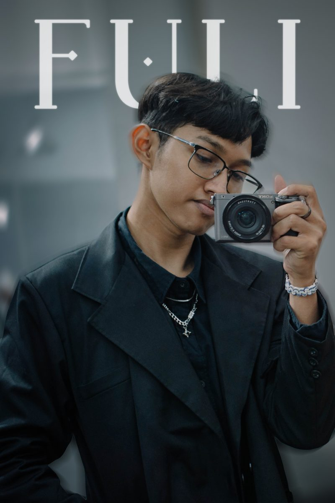

Halo, aku Farel, Seorang Video Editor berusia 18 tahun yang sedang menempuh pendidikan di SMK Muhammadiyah Kota Magelang. Saya memiliki passion dalam mengolah footage menjadi visual yang menarik dan mampu menyampaikan cerita serta emosi.
Saya terus mengembangkan kemampuan dalam video editing, visual storytelling, color grading, dan sound design untuk menghasilkan karya yang kreatif dan berkarakter.
Kumpulan proyek terbaru ada di halaman portofolio.
Lihat Portofolio →